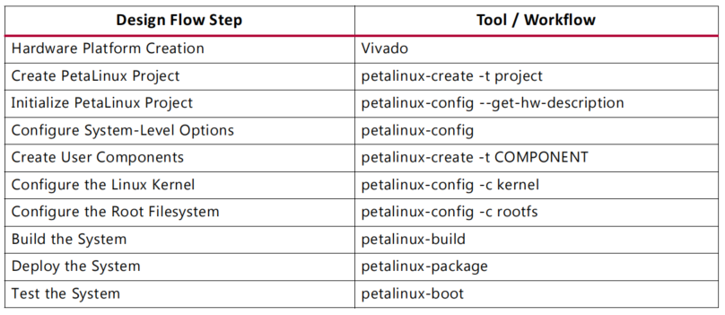
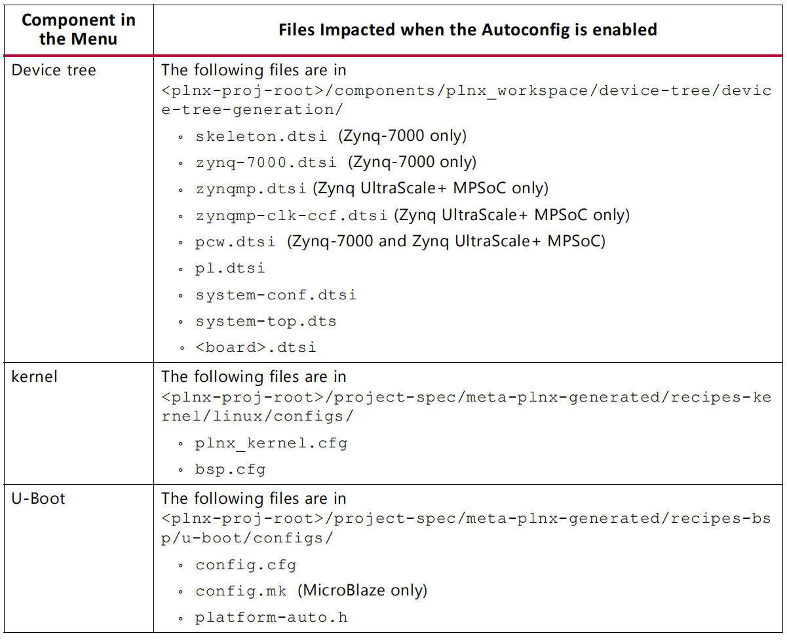

Xilinx Petalinux Workflow

Boot Pre-build Images from SD Card
Boot Pre-built Images with JTAG
Power off
Connect the JTAG port
Connect the serial port
Connect the Ethernet port
Power on
petalinux-boot –jtag –prebuilt 3
Test Pre-build PetaLinux Image with QEMU
petalinux-boot –qemu –prebuilt 3
--prebuilt 1performs FPGA bitstream--prebuilt 2performs U-boot--prebuild 3performs pre-build Linux image
Login to PetaLinux with default user name
rootand passwordroot
To exit QEMU, press Ctrl + A
Testing the Re-build PetaLinux Images
Testing the Re-built Image on Hardware
petalinux-boot –jtag –u-boot –fpga –bitstream < Bit-stream >
petalinux-boot –jtag –kernel –fpga –bitstream < Bit-stream >
Testing the Re-build Image with QEMU
petalinux-boot –qemu –kernel
login as
rootwith passwordroot
Working with a petalinux Project
Creating a new project
petalinux-create –type prject –template < CPU_TYPE > –name < PROJECT >
Import Hardware Description
petalinux-config –get-hw-description=< path-to-directory-which-contains-hardware-description-file >
Configure Project Components
petalinux-config petalinux-config -c kernel petalinux-config -c rootfs
Boot the default Linux Kernel Image
petalinux-boot –qemu –kernel
Boot a Specific Linux Image
petalinux-boot –qemu –image < path-to-linux-iamge-file >
Boot a linux image with a specific DTB
petalinux-boot –qemu –image ./images/linux/zImage –dtb ./images/linux/system.dtb
Building a bootable system image
Generate boot image for zynq device
petalinux-package –boot –format BIN –fsbl < FSBL image > –fpga < FPGA bitstream > –u-boot
Internal Architecture of Petalinux Projects
